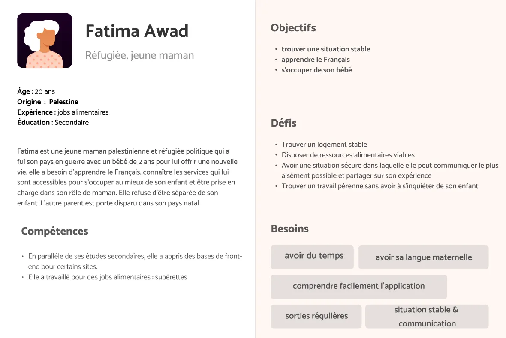
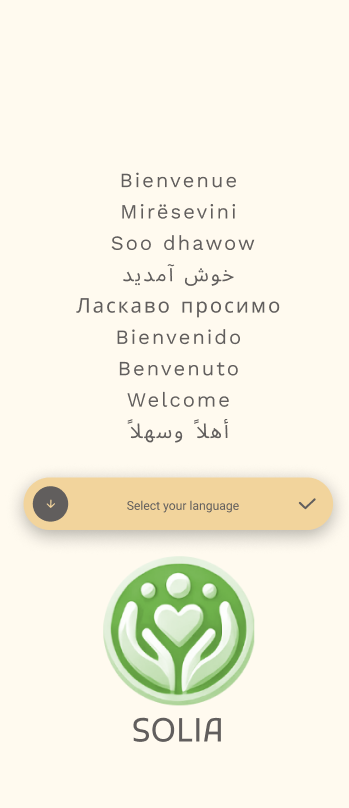
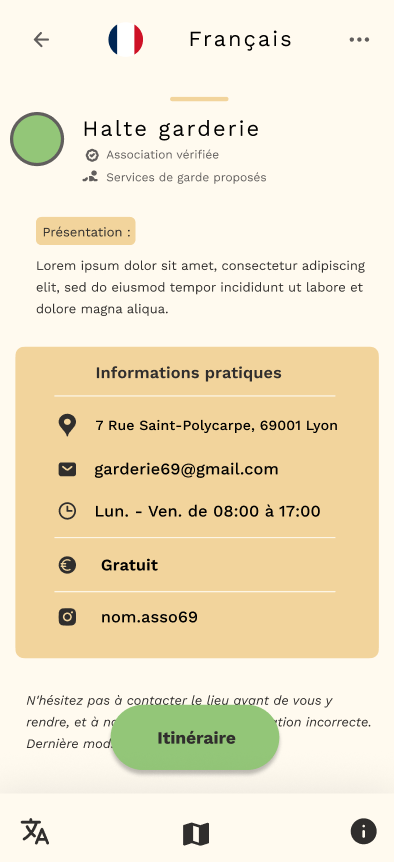
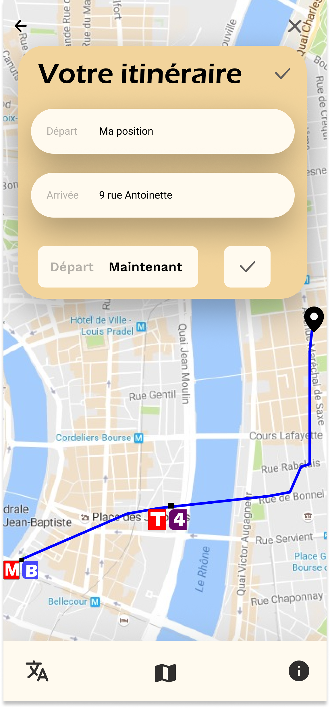
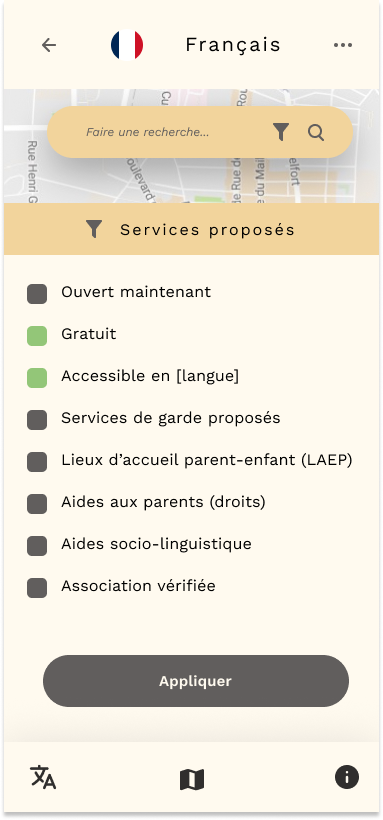

En effectuant nos recherches, nous avons constaté que de nombreuses familles expatriées en France ne pouvaient pas bénéficier de différentes aides (PMI, associations) ainsi que de leurs droits en raison de la barrière linguistique. De plus, ils subissent une errance urbaine rendant très difficile leurs déplacements en ville.
Les familles expatrié ne parlant pas la langue qui ont besoin d’avoir dans leur langue des infos sur ou et comment aller a des associations social.
Choisissez votre langue
Informez vous sur vos
Trouvez vos itinéraires
Filtrez vos besoins
Technologie utilisés
Nos références